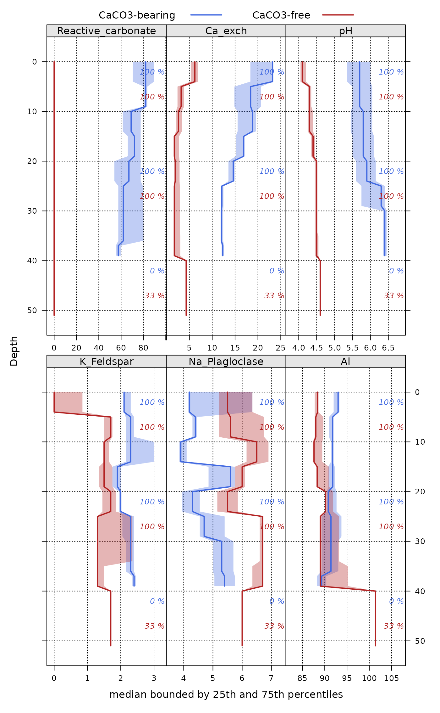
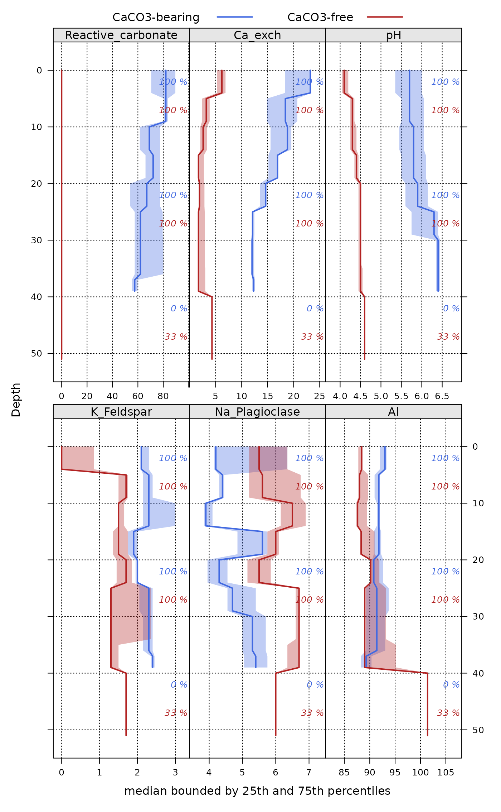

Soil Morphologic, Geochemical, and Mineralogy Data from Rowley et al. 2019.
Source:R/data-documentation.R
rowley2019.RdData from Table 1 and Supplementary Tables 1 and 2 from "A cascading influence of calcium carbonate on the biogeochemistry and pedogenic trajectories of subalpine soils, Switzerland".
Usage
data(rowley2019)Format
A SoilProfileCollection object:
site-level attributes
- id
profile ID
- group
profile group
horizon-level attributes
- sample_id
sample ID
- name
horizon name
- pH
pH
- Al_exch
cmol(+) / kg, exchangeable Al
- Ca_exch
cmol(+) / kg, exchangeable Ca
- CEC_sum
cmol(+) / kg, cation exchange capacity calculated as the sum of exchangeable cations, not including H+
- Ca_exch_saturation
percent
- Al_exch_saturation
percent
- TON
percent, total nitrogen
- SOC
percent, soil organic carbon
- C_to_N
carbon to nitrogen ratio
- Alo
g/kg, oxalate-extractable Al
- Feo
g/kg, oxalate-extractable Fe
- Ald
g/kg, dithionite-extractable Al
- Fed
g/kg, dithionite-extractable Fe
- Feo_Fed
Fe_o to Fe_d ratio
- id
profile ID
- top
horizon top (cm)
- bottom
horizon bottom (cm)
- Al
g/kg by x-ray fluorescence
- Ca
g/kg by x-ray fluorescence
- Cr
g/kg by x-ray fluorescence
- Fe
g/kg by x-ray fluorescence
- K
g/kg by x-ray fluorescence
- Mg
g/kg by x-ray fluorescence
- Mn
g/kg by x-ray fluorescence
- Na
g/kg by x-ray fluorescence
- Ni
g/kg by x-ray fluorescence
- P
g/kg by x-ray fluorescence
- Si
g/kg by x-ray fluorescence
- Ti
g/kg by x-ray fluorescence
- Phyllosilicates
percent by x-ray diffraction spectra
- Quartz
percent by x-ray diffraction spectra
- K_Feldspar
percent by x-ray diffraction spectra
- Na_Plagioclase
percent by x-ray diffraction spectra
- Goethite
percent by x-ray diffraction spectra
- Unidentified
percent by x-ray diffraction spectra
- CCE_Total
percent
- CCE_Reactive
percent
- Reactive_carbonate
percent
- Sand
percent <2um
- Silt
percent 2-50um
- Clay
percent 50-2000um
- CaH2O
Milliq ex: grams of Ca per kilogram of dry soil (g kg-1)
- Ca2MKCl
2M KCl: grams of Ca per kilogram of dry soil (g kg-1)
- CaNa2EDTA
0.05 M Na2EDTA: grams of Ca per kilogram of dry soil (g kg-1)
- CaCuCl2
0.5 M CuCl2: grams of Ca per kilogram of dry soil (g kg-1)
- hzID
horizon ID
References
Mike C. Rowley, Stephanie Grand, Thierry Adatte, Eric P. Verrecchia, Cascading influence of calcium carbonate on the biogeochemistry and pedogenic trajectories of subalpine soils), Switzerland, Geoderma, 2019, 114065, ISSN 0016-7061, doi:10.1016/j.geoderma.2019.114065 .
Examples
library(lattice)
# load data
data('rowley2019')
# check first 5 rows and 10 columns of horizon data
horizons(rowley2019)[1:5, 1:10]
#> sample_id name pH Al_exch Ca_exch CEC_sum Ca_exch_saturation
#> 1 B1.1 Ah1 6.3 0 23.2 23.7 97.6
#> 2 B1.2 Ah2 6.4 0 23.0 23.4 98.4
#> 3 B1.3 ABh 6.3 0 20.3 20.6 98.5
#> 4 B1.4 Bh 6.4 0 16.9 17.2 98.4
#> 5 B1.5 B1 6.4 0 15.2 15.5 98.3
#> Al_exch_saturation TON SOC
#> 1 0 0.8 7.7
#> 2 0 0.8 6.8
#> 3 0 0.6 5.3
#> 4 0 0.5 4.3
#> 5 0 0.4 3.4
# check site data
site(rowley2019)
#> id group
#> 1 B1 CaCO3-bearing
#> 2 B2 CaCO3-bearing
#> 3 B3 CaCO3-bearing
#> 4 F1 CaCO3-free
#> 5 F2 CaCO3-free
#> 6 F3 CaCO3-free
# graphical summary
par(mar=c(1,1,3,1))
plotSPC(rowley2019, color='Feo_Fed', name='name', cex.names=0.85)
 plotSPC(rowley2019, color='Ca_exch', name='name', cex.names=0.85)
# grouped plot
groupedProfilePlot(rowley2019, groups = 'group', color='Ca_exch',
name='name', cex.names=0.85, group.name.offset = -10)
plotSPC(rowley2019, color='Ca_exch', name='name', cex.names=0.85)
# grouped plot
groupedProfilePlot(rowley2019, groups = 'group', color='Ca_exch',
name='name', cex.names=0.85, group.name.offset = -10)
 # aggregate over 1cm slices, for select properties
a <- slab(rowley2019, group ~ Reactive_carbonate + Ca_exch + pH + K_Feldspar + Na_Plagioclase + Al)
# plot styling
tps <- list(superpose.line=list(lwd=2, col=c('royalblue', 'firebrick')))
# make the figure
xyplot(top ~ p.q50 | variable, data=a, ylab='Depth', groups=group,
main='', as.table=TRUE,
xlab='median bounded by 25th and 75th percentiles',
lower=a$p.q25, upper=a$p.q75, ylim=c(55,-5),
panel=panel.depth_function,
prepanel=prepanel.depth_function,
cf=a$contributing_fraction,
alpha=0.33, sync.colors=TRUE,
scales=list(x=list(relation='free', alternating=1)),
par.settings=tps,
auto.key=list(columns=2, lines=TRUE, points=FALSE),
strip=strip.custom(bg=grey(0.9))
)

# aggregate over 1cm slices, for select properties
a <- slab(rowley2019, group ~ Reactive_carbonate + Ca_exch + pH + K_Feldspar + Na_Plagioclase + Al)
# plot styling
tps <- list(superpose.line=list(lwd=2, col=c('royalblue', 'firebrick')))
# make the figure
xyplot(top ~ p.q50 | variable, data=a, ylab='Depth', groups=group,
main='', as.table=TRUE,
xlab='median bounded by 25th and 75th percentiles',
lower=a$p.q25, upper=a$p.q75, ylim=c(55,-5),
panel=panel.depth_function,
prepanel=prepanel.depth_function,
cf=a$contributing_fraction,
alpha=0.33, sync.colors=TRUE,
scales=list(x=list(relation='free', alternating=1)),
par.settings=tps,
auto.key=list(columns=2, lines=TRUE, points=FALSE),
strip=strip.custom(bg=grey(0.9))
)
